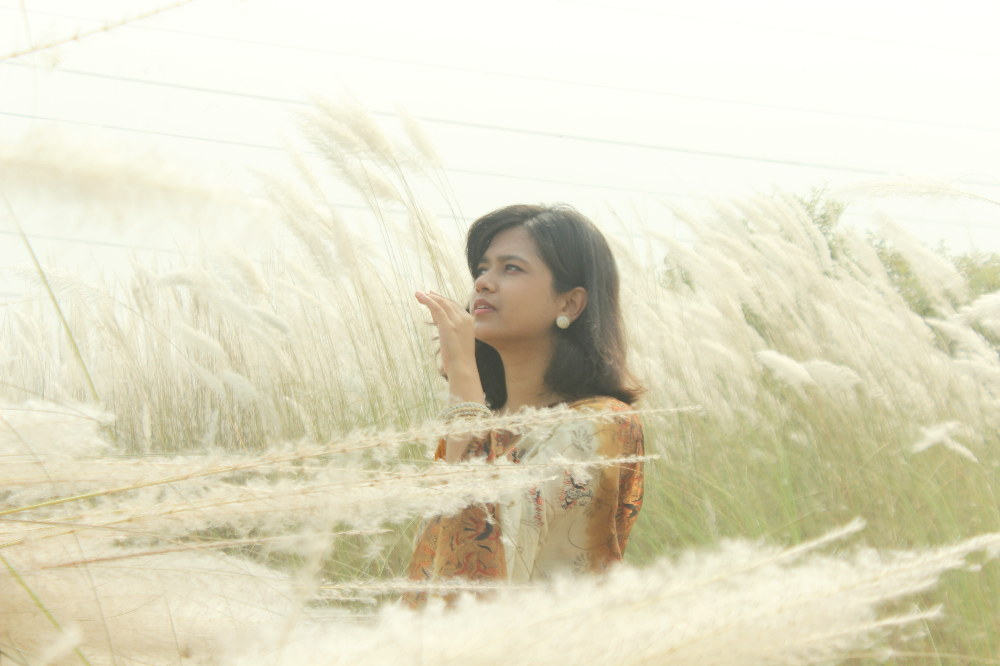
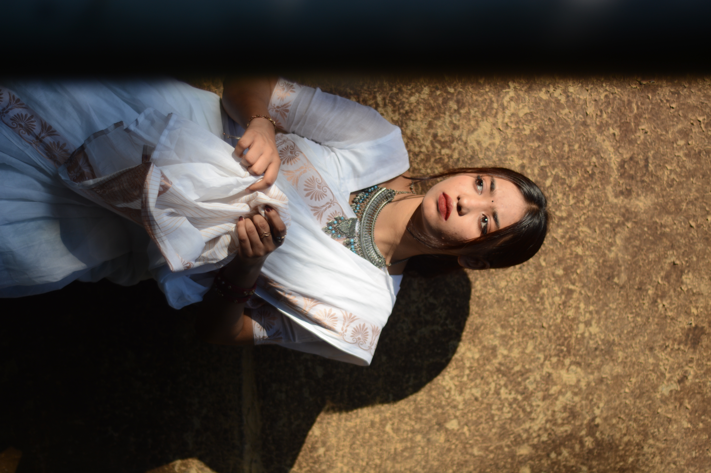
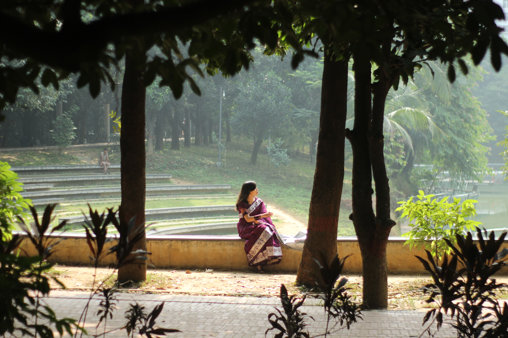
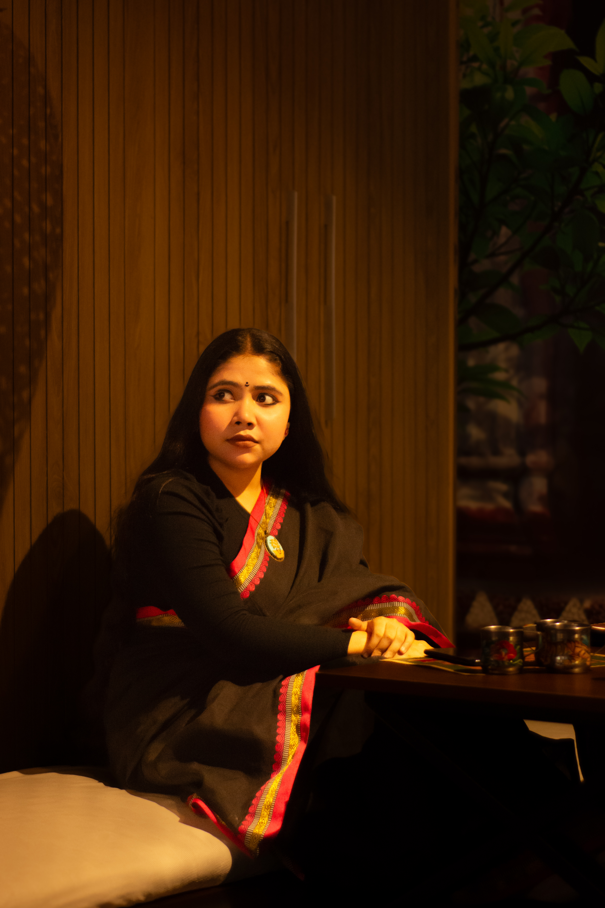

PROJECT / 01
Urban Road Pollution Monitoring
An IoT-based real-time monitoring concept focused on collecting environmental data from urban roads in Dhaka City.
Technology professional working across MIS systems, software, IoT, research and technical training — with a strong interest in building practical, data-driven digital solutions.
A combination of technology, communication, research, training and leadership experience.
I am a Computer Science and Engineering graduate with professional experience in MIS system training, technical support, software testing, research and digital systems.
My interests include IoT, data analysis, intelligent systems, software technologies and technology-driven solutions for real-world problems.
Conducting system training, live demonstrations, technical support and user-oriented guidance for MIS systems and digital workflows.
Worked within an IT-oriented management trainee environment with exposure to organizational technology, systems and operational processes.
Supporting students in research-oriented work, technical exploration and academic project development.
Worked with the Digital Marketing Team and participated in university communication, promotional and student engagement activities.
Projects and areas of work that represent my technical interests and practical experience.
An IoT-based real-time monitoring concept focused on collecting environmental data from urban roads in Dhaka City.
Practical system training, demonstrations, user support and digital workflow assistance for MIS-based operations.
Exploring data processing, visualization, machine learning and statistical approaches for practical research problems.
Supporting students and peers with research ideas, technical implementation and academic project development.
Research focused on combining IoT-based environmental data collection with intelligent software and time-series analysis for urban road pollution monitoring.
Leadership, communication and extracurricular activities have been an important part of my university journey.
Participated in competitive parliamentary debating and achieved championship success.
Selected photographs from my personal archive — portraits, people, places, details and moments observed through a documentary and editorial lens.

photography-04.JPG
photography-07.JPG photography-13.JPG
photography-13.JPG

photography-02.JPG
photography-08.JPG photography-03.JPG
photography-03.JPG
Whether it is a research collaboration, technology project, professional opportunity, training initiative or simply a conversation around technology — feel free to reach out.